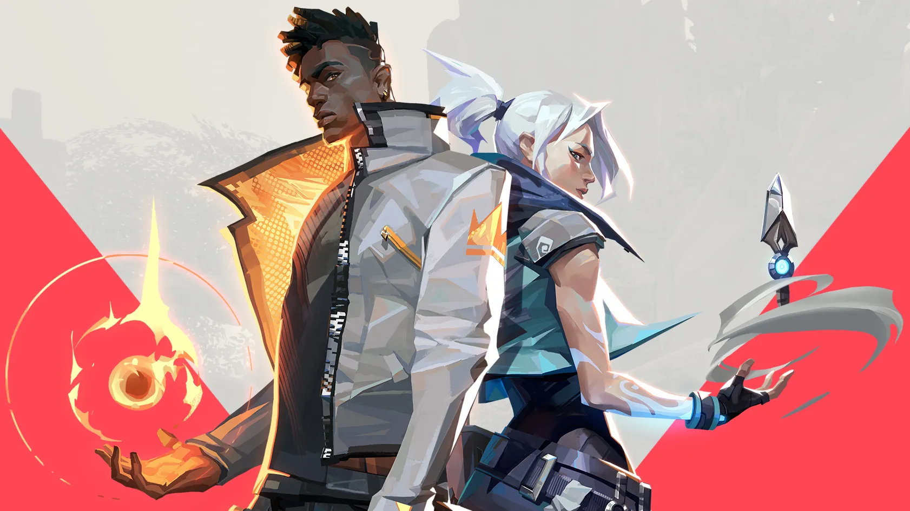

정밀한 실력 자랑, 굉장한 전리품, 숨 막히는 게임플레이와 짜릿한 경험까지. 모두 발로란트에서 무료로 즐길 수 있습니다. 발로란트에서는 각각 다섯 명으로 이루어진 공격팀과 수비팀이 25라운드 13선승제로 총격전을 벌입니다. 무엇보다 투명하고 공정한 게임플레이가 중요한 게임이기 때문에, 라이엇 게임즈에서는 발로란트를 위해 투자를 아끼지 않고 전례 없이 뛰어난 백엔드 시스템을 구축했습니다. 이 시스템은 전용 128틱 서버, 맞춤 제작 넷코드, 서버 권한 게임 아키텍처, 특유의 부정행위 방지 기능 등을 자랑합니다.
병신 게임